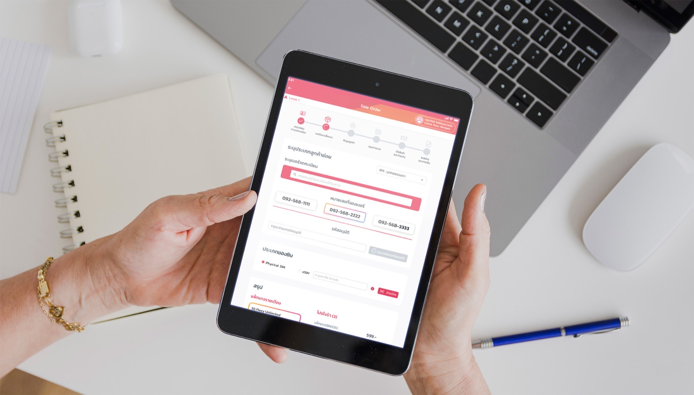

True Corporation needed a unified service hub — one place where customers could manage their subscriptions, activate SIMs, browse a product catalog, and get support without having to call in.

True's services were spread across multiple apps and call centre touchpoints. Customers switching between plans, activating new SIMs, or looking for accessories had to navigate several different systems — and often gave up and called support instead.
The brief was to design a service platform that unified the key customer journeys, reduced call centre load, and made True's product ecosystem feel accessible rather than overwhelming.
A dashboard that surfaces the most important actions — plan status, usage, and quick links to top tasks — without burying them under promotions.
A step-by-step flow for new customers activating a SIM — designed to be clear enough to complete without needing help from a store staff.
A browsable catalog of True's device and accessory range — with filters and a layout that made comparison easy even on a small screen.
Common support requests routed to self-service flows — reducing the number of contacts that needed a human to resolve.